04_proteinPanel_clustering
SandraTietscher
2020-10-23
Last updated: 2021-01-18
Checks: 7 0
Knit directory: BCexh_IMC/
This reproducible R Markdown analysis was created with workflowr (version 1.6.2). The Checks tab describes the reproducibility checks that were applied when the results were created. The Past versions tab lists the development history.
Great! Since the R Markdown file has been committed to the Git repository, you know the exact version of the code that produced these results.
Great job! The global environment was empty. Objects defined in the global environment can affect the analysis in your R Markdown file in unknown ways. For reproduciblity it’s best to always run the code in an empty environment.
The command set.seed(12345) was run prior to running the code in the R Markdown file. Setting a seed ensures that any results that rely on randomness, e.g. subsampling or permutations, are reproducible.
Great job! Recording the operating system, R version, and package versions is critical for reproducibility.
Nice! There were no cached chunks for this analysis, so you can be confident that you successfully produced the results during this run.
Great job! Using relative paths to the files within your workflowr project makes it easier to run your code on other machines.
Great! You are using Git for version control. Tracking code development and connecting the code version to the results is critical for reproducibility.
The results in this page were generated with repository version e3536ab. See the Past versions tab to see a history of the changes made to the R Markdown and HTML files.
Note that you need to be careful to ensure that all relevant files for the analysis have been committed to Git prior to generating the results (you can use wflow_publish or wflow_git_commit). workflowr only checks the R Markdown file, but you know if there are other scripts or data files that it depends on. Below is the status of the Git repository when the results were generated:
Ignored files:
Ignored: analysis/.Rhistory
Untracked files:
Untracked: BB184_aDC_PD1.png
Untracked: BB212_aDC_PD1.png
Untracked: BB212_aDC_PD1_Bcells.png
Untracked: CD11c_CD68_scatter.png
Untracked: Neighbourhood_TLS_relative.png
Untracked: Neighbourhood_all_relative.png
Untracked: TBB129_aDC_PD1.png
Untracked: TBB129_aDC_PD1_Bcell.png
Untracked: analysis/XX_RNApanel_neighbourhood.Rmd
Untracked: barplot_tumorSubtype_image.pdf
Untracked: cytokine_environment.png
Untracked: data/RNAseq_Tcells.rds
Untracked: data/RNAseq_epithelial.rds
Untracked: data/ROI_info_HIER.csv
Untracked: data/ROI_info_RNAscope.csv
Untracked: data/cpout/
Untracked: data/masks/
Untracked: heatmap_markerexpression_myeloid_sub.png
Untracked: neighbourhood_myeloid_TIGdifference.png
Untracked: neighbourhood_myeloid_TLS_relative.png
Untracked: neighbourhood_myeloid_all_relative.png
Untracked: neighbourhood_myeloid_split_TLS.png
Untracked: output/ProteinPanel/
Untracked: output/RNApanel/
Untracked: output/TLS_score_25samples.png
Untracked: output/sce_ProteinPanel_afterQC.rds
Untracked: output/sce_ProteinPanel_initial.rds
Untracked: output/sce_ProteinPanel_initial_TLSrevised.rds
Untracked: output/sce_RNApanel_afterQC.rds
Untracked: output/sce_RNApanel_initial.rds
Untracked: output/sce_RNApanel_initial_TLSrevised.rds
Unstaged changes:
Modified: analysis/10_RNApanel_TNK_cytokines.Rmd
Modified: analysis/XX_cytomapper_images.Rmd
Note that any generated files, e.g. HTML, png, CSS, etc., are not included in this status report because it is ok for generated content to have uncommitted changes.
These are the previous versions of the repository in which changes were made to the R Markdown (analysis/04_proteinPanel_clustering.Rmd) and HTML (docs/04_proteinPanel_clustering.html) files. If you’ve configured a remote Git repository (see ?wflow_git_remote), click on the hyperlinks in the table below to view the files as they were in that past version.
| File | Version | Author | Date | Message |
|---|---|---|---|---|
| html | 2edd52a | SandraTietscher | 2020-11-25 | Build site. |
| Rmd | 6066f65 | SandraTietscher | 2020-11-25 | Update marker expression UMAP plots |
| html | b5a2179 | SandraTietscher | 2020-11-25 | Build site. |
| Rmd | 7bd896b | SandraTietscher | 2020-11-25 | Figure updates for Supplemental Fig. S2 |
| html | 2d8660b | SandraTietscher | 2020-11-02 | Build site. |
| html | 4b8f131 | SandraTietscher | 2020-10-26 | Build site. |
| Rmd | 9477c8c | SandraTietscher | 2020-10-26 | Small changes |
| html | 8a8ca8f | SandraTietscher | 2020-10-23 | Build site. |
| Rmd | 65fe03f | SandraTietscher | 2020-10-23 | Add script for tumor/stroma clustering of the protein panel |
Introduction
This script provides UMAP visualization of single cells and performs a first clustering step to separate tumor and stromal cells.
Load libraries and data
First, we will load the needed libraries and the SingleCellExperiment object, that was created in the previous section.
# Load libraries
library(ggplot2)
library(SingleCellExperiment)
library(scater)
library(viridis)
library(RColorBrewer)
library(dittoSeq)
library(scales)
library(tidyverse)
library(ggpubr)
library(cowplot)
library(scran)
# Read SingleCellExperiment object
sce_protein <- readRDS("output/sce_ProteinPanel_afterQC.rds")UMAP representation
For UMAP calculation, the arcsinh-transformed counts are used. As the goal here is only to identify main cell types, only the main cell type markers are included. To speed up UMAP calculation and plotting, only a subset of cells is used.
Calculate tSNE and UMAP on a subset of the cells
# Subset 10000 cells per sample
sce_protein$cellID <- rownames(colData(sce_protein))
colData(sce_protein) %>%
as.data.frame() %>%
group_by(sample) %>%
sample_n(10000) %>%
pull(cellID) -> cell_idx
sce_protein_sub <- sce_protein[,cell_idx]
# Run Dimensional reduction
markers_exclude_umap <- c("DNA1", "DNA2", "HH3", "LAG-3", "IDO1", "PD1", "Tim-3", "MMP9", "Granzyme_B", "CD274", "TCF7", "ICOS", "CAIX", "GITR", "Arginase", "CD40", "iNOS", "Cleaved_CP", "Ki-67")
markers_include_umap <- rownames(assay(sce_protein_sub, "counts"))[! (rownames(assay(sce_protein_sub, "counts")) %in% markers_exclude_umap)]
sce_protein_sub <- runUMAP(sce_protein_sub, exprs_values = "exprs",
subset_row = rownames(assay(sce_protein_sub, "exprs")) %in% markers_include_umap)Visualize features on UMAP
# SlideID, SampleID, ROI, Indication, Tumour mask
dittoDimPlot(sce_protein_sub, var = "sample", reduction.use = "UMAP", size = 0.5,
color.panel = metadata(sce_protein)$colour_vectors$sample)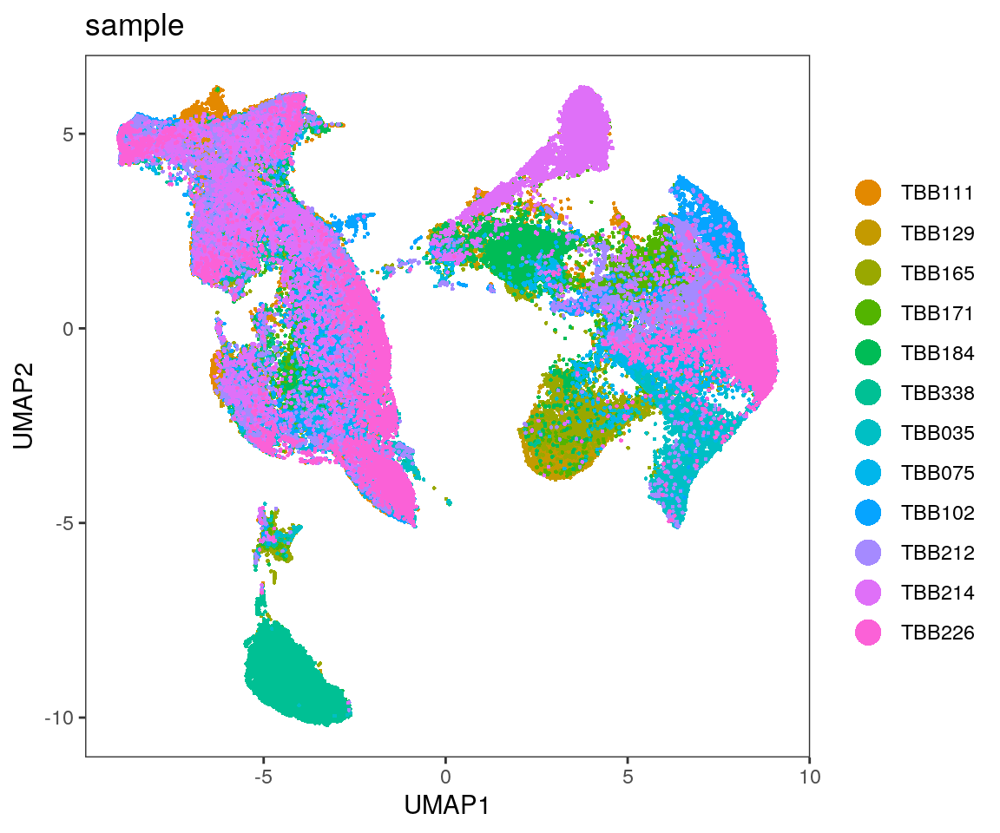
| Version | Author | Date |
|---|---|---|
| 8a8ca8f | SandraTietscher | 2020-10-23 |
dittoDimPlot(sce_protein_sub, var = "sample", reduction.use = "UMAP", size = 0.5,
color.panel = metadata(sce_protein)$colour_vectors$sample, split.by = "sample") 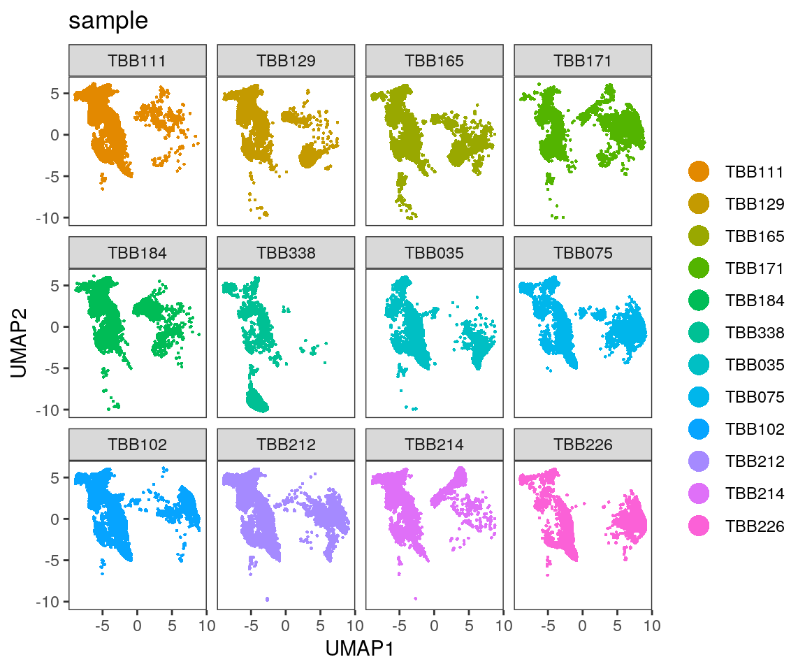
| Version | Author | Date |
|---|---|---|
| 8a8ca8f | SandraTietscher | 2020-10-23 |
dittoDimPlot(sce_protein_sub, var = "TIG", reduction.use = "UMAP", size = 0.5,
color.panel = metadata(sce_protein)$colour_vectors$TIG)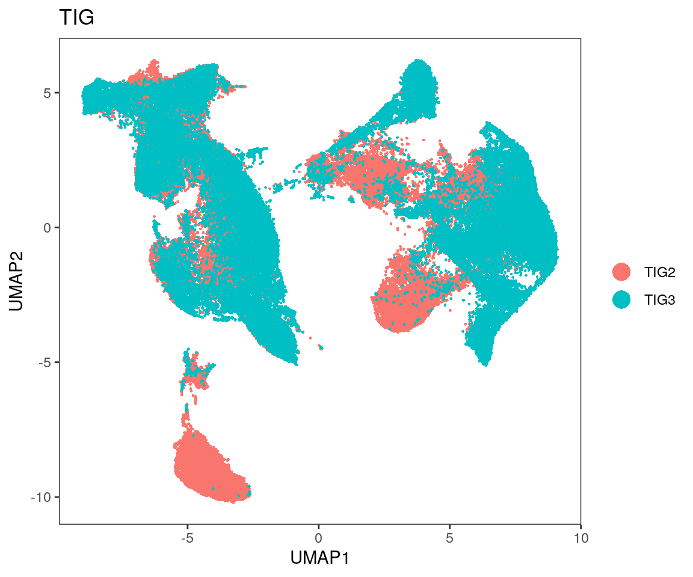
| Version | Author | Date |
|---|---|---|
| 8a8ca8f | SandraTietscher | 2020-10-23 |
dittoDimPlot(sce_protein_sub, var = "TLS", reduction.use = "UMAP", size = 0.5,
color.panel = metadata(sce_protein)$colour_vectors$TLS)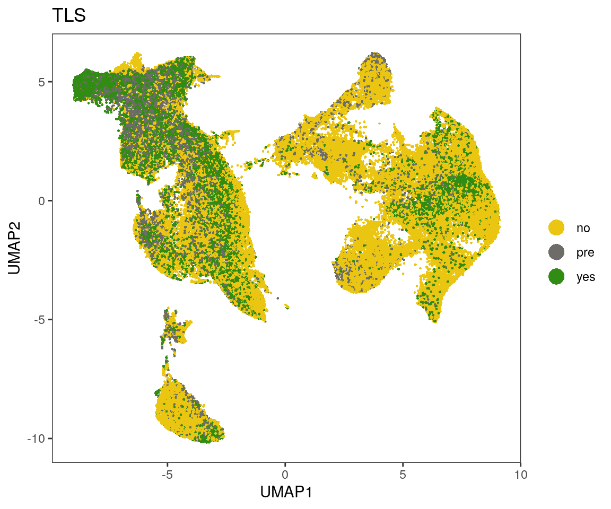
Visualize expression on UMAP
Visualize the expression of each marker.
1. Arcsinh-transformed counts
p.list <- list()
for(i in rownames(sce_protein_sub)){
p.list[[i]] <- plotUMAP(sce_protein_sub, colour_by = i, by_exprs_values = "exprs",
point_size = 0.5, point_alpha = 1, shape_by = "panel_type")
}
plot_grid(plotlist = p.list, ncol = 7)
| Version | Author | Date |
|---|---|---|
| 8a8ca8f | SandraTietscher | 2020-10-23 |
2. Scaled arcsinh-transformed counts
p.list <- list()
for(i in rownames(sce_protein_sub)){
p.list[[i]] <- plotUMAP(sce_protein_sub, colour_by = i, by_exprs_values = "scaled",
point_size = 0.5, point_alpha = 1, shape_by = "panel_type") + scale_colour_gradient2(name = i, low = "#2166ac", mid = "white", high = "#b2182b", limits = c(-3, 3), na.value = "#b2182b")
}
plot_grid(plotlist = p.list, ncol = 7)
Run graph-based clustering (Phenograph)
Use normalized counts for clustering, because this provides a better separation of noise and actual signal compared to arcsinh-transformed counts.
Include only markers that are relevant for the general distinction between tumor and stromal cells
markers_exclude_phenograph <- markers_exclude_umap
markers_include_phenograph <- rownames(assay(sce_protein, "counts"))[! (rownames(assay(sce_protein, "counts")) %in% markers_exclude_phenograph)]
cluster_counts_normalized <- subset(assay(sce_protein, "normalized"), rownames(assay(sce_protein, "normalized")) %in% markers_include_phenograph)
g <- buildSNNGraph(cluster_counts_normalized, k=8)
clust<- igraph::cluster_louvain(g)$membership
table(clust)clust
1 2 3 4 5 6 7 8 9 10 11 12 13
30502 25030 22230 21998 11160 26709 6465 9970 20761 18085 9779 30607 25045
14 15 16 17 18 19 20 21 22 23 24
14282 18618 22430 27898 6545 20180 4015 7042 8455 2979 33918 write.csv(table(clust), "output/RNApanel/cluster_cellnumbers.csv", row.names = FALSE)
#add cluster information to sce object
sce_protein$phenograph_cluster <- as.factor(clust)Plot mean expression for each cluster
clustermean_sce_protein <- aggregateAcrossCells(sce_protein, ids = DataFrame(cluster = sce_protein$phenograph_cluster), average = TRUE)
colnames(clustermean_sce_protein) <- clustermean_sce_protein$cluster
# Center and scale raw counts
assay(clustermean_sce_protein, "scaled") <- t(scale(t(assay(clustermean_sce_protein, "counts"))))
# Normalize raw counts
norm_counts <- t(apply(assay(clustermean_sce_protein, "counts"), 1, function(x)(x-min(x))/(max(x)-min(x))))
assay(clustermean_sce_protein, "normalized", withDimnames = FALSE) <- norm_counts
## Plot
# Z-scaled
dittoHeatmap(clustermean_sce_protein[markers_include_phenograph,], assay = "scaled", scale = "none",
heatmap.colors = magma(100),
cluster_cols = TRUE, show_colnames = TRUE,
breaks = seq(-3, 3, length.out = 101))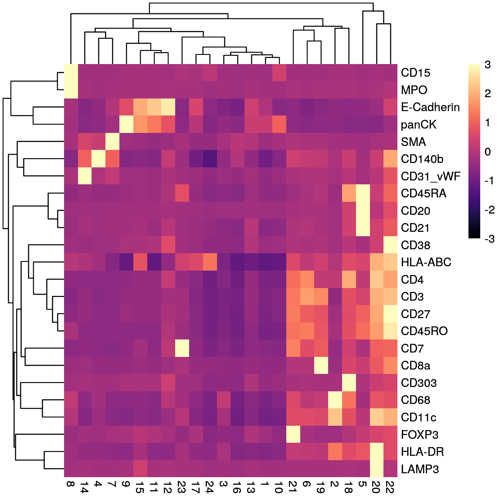
| Version | Author | Date |
|---|---|---|
| 8a8ca8f | SandraTietscher | 2020-10-23 |
# Normalized (0-1)
dittoHeatmap(clustermean_sce_protein[markers_include_phenograph,], assay = "normalized", scale = "none",
heatmap.colors = viridis(100),
cluster_cols = TRUE, show_colnames = TRUE)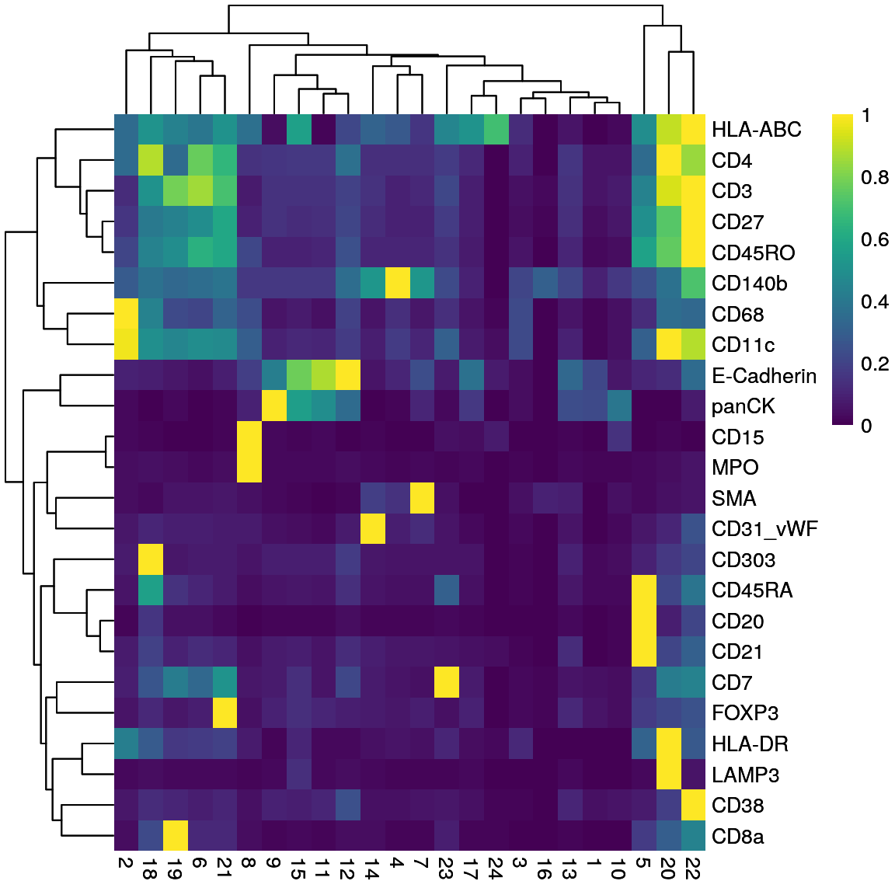
| Version | Author | Date |
|---|---|---|
| 8a8ca8f | SandraTietscher | 2020-10-23 |
Display clusters on UMAP
Use the subset SCE object for UMAP plotting.
# Assign cluster numbers to the right cells
sub_cellnames <- colnames(sce_protein_sub)
cluster_sub <- sce_protein[,sub_cellnames]$phenograph_cluster
sce_protein_sub$phenograph_cluster <- cluster_sub
#plot on umap
dittoDimPlot(sce_protein_sub, var = "phenograph_cluster", reduction.use = "UMAP", size = 0.5, do.label = TRUE, opacity = 0.5)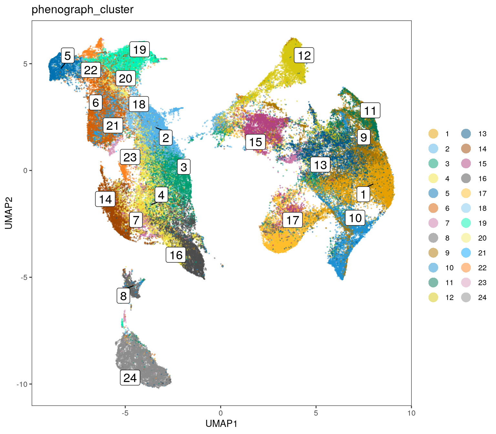
| Version | Author | Date |
|---|---|---|
| 8a8ca8f | SandraTietscher | 2020-10-23 |
dittoDimPlot(sce_protein_sub, var = "phenograph_cluster", reduction.use = "UMAP", size = 0.5, split.by = "phenograph_cluster", opacity = 0.2)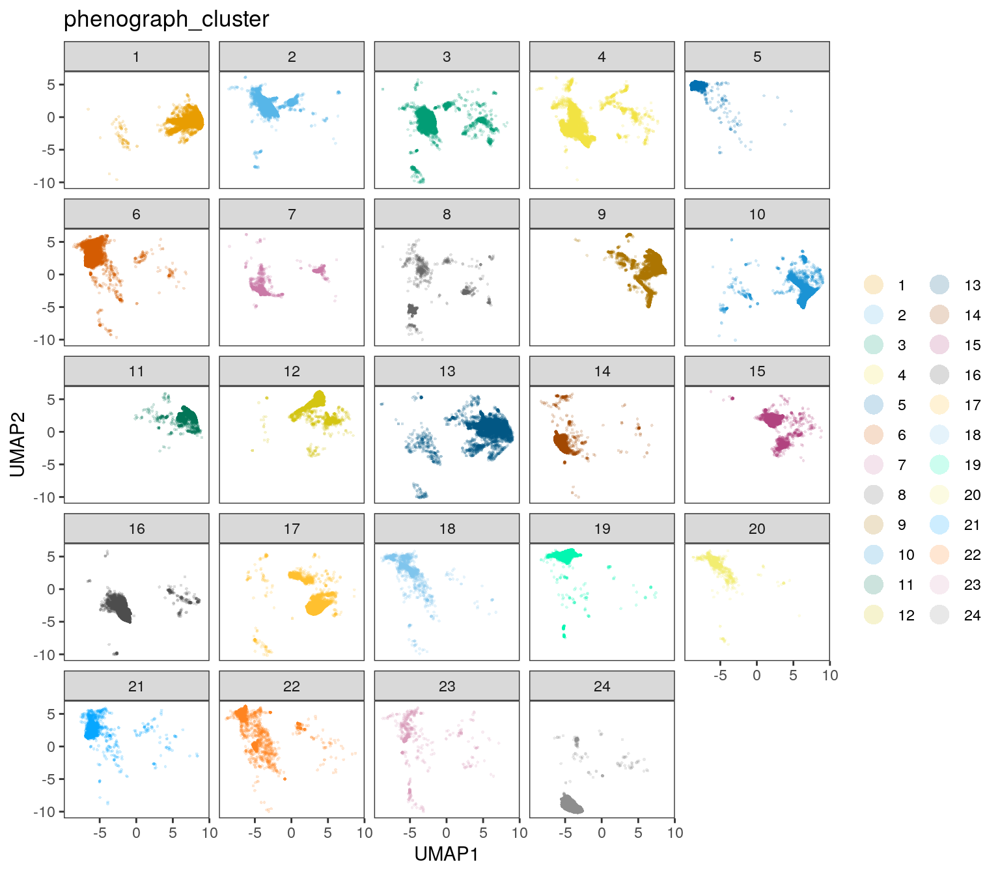
| Version | Author | Date |
|---|---|---|
| 8a8ca8f | SandraTietscher | 2020-10-23 |
Assign tumor/stroma labels
Look at tumor/stroma proportion per sample.
labels <- read.csv("data/ProteinPanel_tumor_stroma_clusters.csv")
label_list <- labels$class[match(sce_protein$phenograph_cluster, labels$cluster)]
sce_protein$cell_class <- label_list
#plot on UMAP
label_list_sub <- labels$class[match(sce_protein_sub$phenograph_cluster, labels$cluster)]
sce_protein_sub$cell_class <- label_list_sub
dittoDimPlot(sce_protein_sub, var = "cell_class", reduction.use = "UMAP", size = 0.5, do.label = TRUE)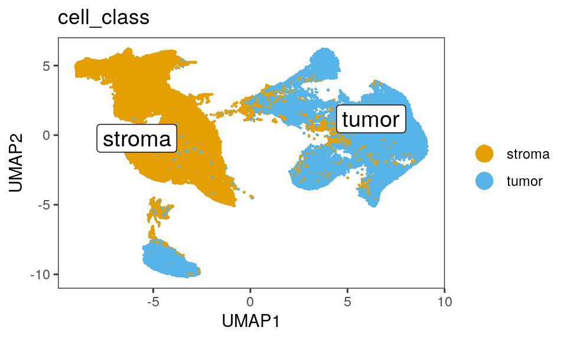
| Version | Author | Date |
|---|---|---|
| 8a8ca8f | SandraTietscher | 2020-10-23 |
#Plot tumor/stroma ratio per sample
tab <- as.data.frame(prop.table(table(sce_protein$sample, sce_protein$cell_class), margin = 1))
colnames(tab) <- c("sample", "class", "proportion")
ggplot(tab, aes(sample, y = proportion, fill=class)) +
geom_bar(stat="identity")+
scale_fill_manual(values = c("red", "skyblue"))+
theme(axis.title.x=element_blank(), axis.title.y = element_blank())+
theme(panel.background = element_blank(), axis.text.x = element_text(angle = 30))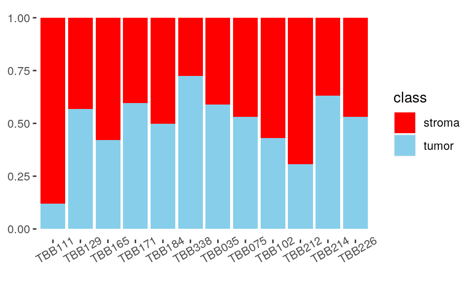
| Version | Author | Date |
|---|---|---|
| 8a8ca8f | SandraTietscher | 2020-10-23 |
Subset tumor cell/stroma cell objects and save them
cellid <- colnames(sce_protein)
tumor_x <- which(sce_protein$cell_class == "tumor")
stroma_x <- which(sce_protein$cell_class == "stroma")
cellid_tumor <- colnames(sce_protein)[tumor_x]
cellid_stroma <- colnames(sce_protein)[stroma_x]
sce_tumor <- sce_protein[,cellid_tumor]
sce_stroma <- sce_protein[,cellid_stroma]
# Save
saveRDS(sce_tumor, "output/ProteinPanel/sce_ProteinPanel_tumor.rds")
saveRDS(sce_stroma, "output/ProteinPanel/sce_ProteinPanel_stroma.rds")
# Save updated objects
saveRDS(sce_protein, "output/ProteinPanel/sce_ProteinPanel_TS_assigned.rds")
saveRDS(sce_protein_sub, "output/ProteinPanel/sce_ProteinPanel_sub_UMAP.rds")Compare tumor/stroma proportions for the two panels
#Read in RNApanel object and prepare data
sce_RNA <- readRDS("output/RNApanel/sce_RNApanel_TS_assigned.rds")
tab2 <-as.data.frame(prop.table(table(sce_RNA$sample, sce_RNA$cell_class), margin = 1))
colnames(tab2) <- c("sample", "class", "proportion")
tab2$panel <- "RNApanel"
tab$panel <- "ProteinPanel"
tabc <- rbind(tab, tab2)
ggplot(tabc, aes(panel, y = proportion, fill=class)) +
geom_bar(stat="identity")+
facet_wrap(~sample, ncol = 6)+
scale_fill_manual(values = c("red", "skyblue"))+
theme(axis.title.x=element_blank(), axis.title.y = element_blank())+
theme(panel.background = element_blank(), axis.text.x = element_text(angle = 30))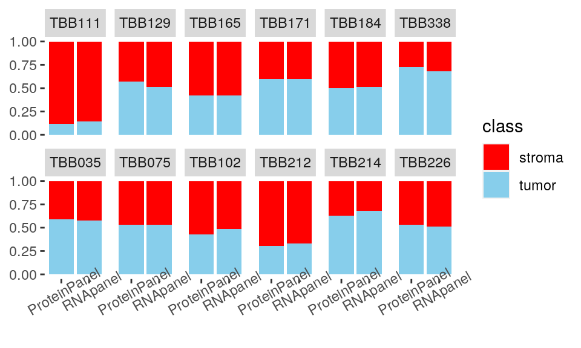
| Version | Author | Date |
|---|---|---|
| 8a8ca8f | SandraTietscher | 2020-10-23 |
sessionInfo()R version 4.0.2 (2020-06-22)
Platform: x86_64-pc-linux-gnu (64-bit)
Running under: Ubuntu 20.04 LTS
Matrix products: default
BLAS/LAPACK: /usr/lib/x86_64-linux-gnu/openblas-openmp/libopenblasp-r0.3.8.so
locale:
[1] LC_CTYPE=en_US.UTF-8 LC_NUMERIC=C
[3] LC_TIME=en_US.UTF-8 LC_COLLATE=en_US.UTF-8
[5] LC_MONETARY=en_US.UTF-8 LC_MESSAGES=C
[7] LC_PAPER=en_US.UTF-8 LC_NAME=C
[9] LC_ADDRESS=C LC_TELEPHONE=C
[11] LC_MEASUREMENT=en_US.UTF-8 LC_IDENTIFICATION=C
attached base packages:
[1] parallel stats4 stats graphics grDevices utils datasets
[8] methods base
other attached packages:
[1] scran_1.16.0 cowplot_1.0.0
[3] ggpubr_0.4.0 forcats_0.5.0
[5] stringr_1.4.0 dplyr_1.0.1
[7] purrr_0.3.4 readr_1.3.1
[9] tidyr_1.1.1 tibble_3.0.3
[11] tidyverse_1.3.0 scales_1.1.1
[13] dittoSeq_1.0.2 RColorBrewer_1.1-2
[15] viridis_0.5.1 viridisLite_0.3.0
[17] scater_1.16.2 SingleCellExperiment_1.10.1
[19] SummarizedExperiment_1.18.2 DelayedArray_0.14.1
[21] matrixStats_0.56.0 Biobase_2.48.0
[23] GenomicRanges_1.40.0 GenomeInfoDb_1.24.2
[25] IRanges_2.22.2 S4Vectors_0.26.1
[27] BiocGenerics_0.34.0 ggplot2_3.3.2
[29] workflowr_1.6.2
loaded via a namespace (and not attached):
[1] ggbeeswarm_0.6.0 colorspace_1.4-1
[3] ggsignif_0.6.0 ellipsis_0.3.1
[5] rio_0.5.16 ggridges_0.5.2
[7] rprojroot_1.3-2 XVector_0.28.0
[9] BiocNeighbors_1.6.0 fs_1.5.0
[11] rstudioapi_0.11 farver_2.0.3
[13] ggrepel_0.8.2 RSpectra_0.16-0
[15] fansi_0.4.1 lubridate_1.7.9
[17] xml2_1.3.2 codetools_0.2-16
[19] knitr_1.29 jsonlite_1.7.0
[21] broom_0.7.0 dbplyr_1.4.4
[23] uwot_0.1.8 pheatmap_1.0.12
[25] compiler_4.0.2 httr_1.4.2
[27] dqrng_0.2.1 backports_1.1.8
[29] assertthat_0.2.1 Matrix_1.2-18
[31] limma_3.44.3 cli_2.0.2
[33] later_1.1.0.1 BiocSingular_1.4.0
[35] htmltools_0.5.0 tools_4.0.2
[37] igraph_1.2.5 rsvd_1.0.3
[39] gtable_0.3.0 glue_1.4.1
[41] GenomeInfoDbData_1.2.3 Rcpp_1.0.5
[43] carData_3.0-4 cellranger_1.1.0
[45] vctrs_0.3.2 DelayedMatrixStats_1.10.1
[47] xfun_0.16 openxlsx_4.1.5
[49] rvest_0.3.6 lifecycle_0.2.0
[51] irlba_2.3.3 statmod_1.4.34
[53] rstatix_0.6.0 edgeR_3.30.3
[55] zlibbioc_1.34.0 hms_0.5.3
[57] promises_1.1.1 yaml_2.2.1
[59] curl_4.3 gridExtra_2.3
[61] stringi_1.4.6 zip_2.0.4
[63] BiocParallel_1.22.0 rlang_0.4.7
[65] pkgconfig_2.0.3 bitops_1.0-6
[67] evaluate_0.14 lattice_0.20-41
[69] labeling_0.3 tidyselect_1.1.0
[71] RcppAnnoy_0.0.16 plyr_1.8.6
[73] magrittr_1.5 R6_2.4.1
[75] generics_0.0.2 DBI_1.1.0
[77] foreign_0.8-80 pillar_1.4.6
[79] haven_2.3.1 whisker_0.4
[81] withr_2.2.0 abind_1.4-5
[83] RCurl_1.98-1.2 modelr_0.1.8
[85] crayon_1.3.4 car_3.0-8
[87] rmarkdown_2.3 locfit_1.5-9.4
[89] grid_4.0.2 readxl_1.3.1
[91] data.table_1.13.0 blob_1.2.1
[93] git2r_0.27.1 reprex_0.3.0
[95] digest_0.6.25 httpuv_1.5.4
[97] munsell_0.5.0 beeswarm_0.2.3
[99] vipor_0.4.5